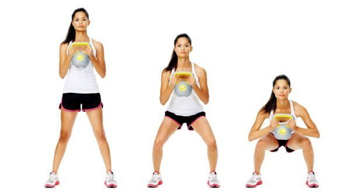
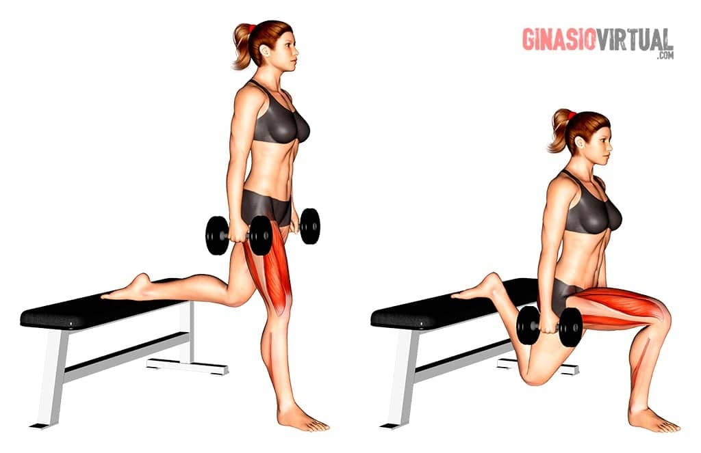
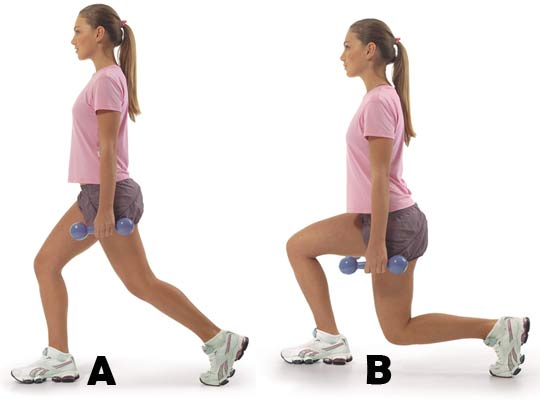
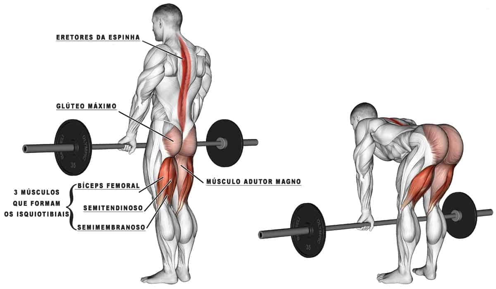
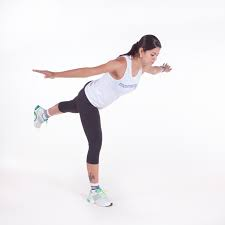
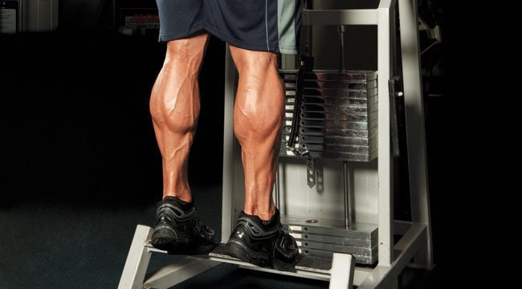
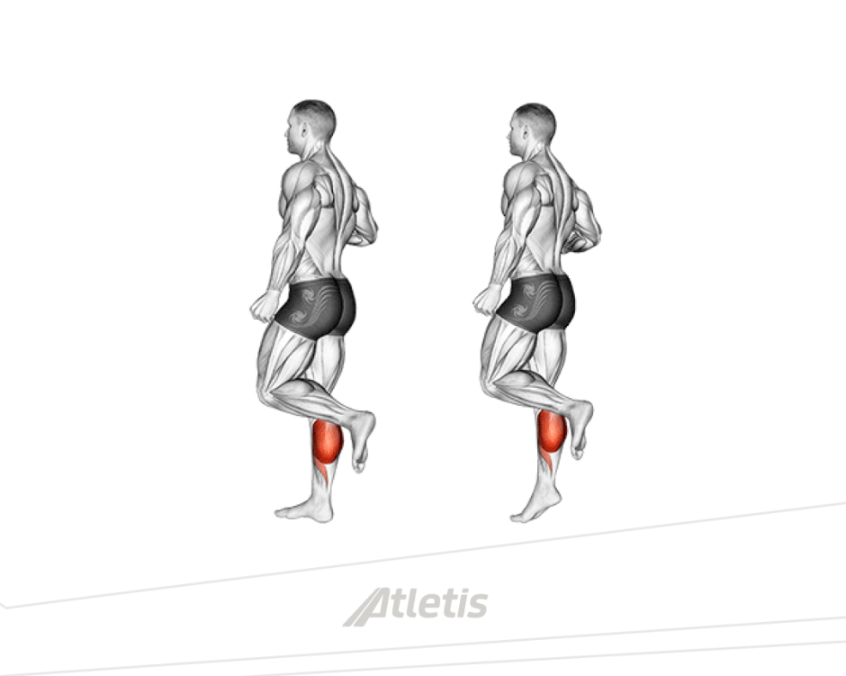

Quadríceps
Agachamento
O maior cuidado que se deve tomar é com a postura. Mantendo sempre uma boa amplitude de movimento, evite que sua cervical "dobre" ou tensione na posição mais baixa do movimento.
Agachamento búlgaro
O posicionamento do tronco deve sempre estar reto com relação ao resto do corpo, evitando o desgaste dos joelhos. Assim como no agachamento normal, pesos podem ser adicionados. O foco é amplitude sempre, então, para facilitar, tenha em mente que o joelho da perna apoiada deve encostar(ou quase) no solo.
Passada alternada
Segue o mesmo princípio do agachamento búlgaro, mas o equilíbrio é mais fácil de ser mantido nesse exercício. Inclinar o corpo a frente vai desgastar seu joelho, mantenha postura. Pode ser feito em movimento ou no mesmo lugar.
Posteriores
Agachamento Stiff
Qualquer coisa que sirva como um peso ajuda nesse exercício. Trave o abdomên e deixe os glúteos à retaguarda. Mantenha a postura durante todo o movimento e deixe que a amplitude vá apenas até seu tronco formar 90 graus com suas pernas.
Agachamento Stiff unilateral
Segue o mesmo do stiff normal mas aqui o equilíbrio torna-se mais difícil de ser mantido. Se for iniciante comece sem pesos e vá progredindo conforme se aprimora. Lembre-se que a postura também é mais difícil de ser mantida, se possível faça em frente a um espelho.
Panturrilha
Panturrilha na escada
O músculo da panturrilha é muito forte e por isso é difícil gerar seu desgaste. Mais repetições e maior amplitude garantem que as fibras sejam recrutadas com maior intensidade. Não tenha pressa, tenha cadência e vá até a falha.
Panturrilha unilateral na escada
O indicado é realizar séries com pouquíssimo intervalo e de grande volume. O número de repetições não se manterá constante em todas as séries mas o ideal é levar o músculo à exaustão.